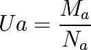

Comment comparer deux zones économiques ?
Les définitions que nous venons de voir concernant la masse monétaire, sa croissance, le lien qu’elle devrait avoir avec le Dividende Universel, et le champ de valeur, nous permettent une comparaison entre deux zones économiques qui utilisent deux monnaies différentes.
Soient deux zones économiques A et B créditées chacune d’une masse monétaire définie dans l’espace et dans le temps, Ma(x,t) et Mb(x,t) et d’un nombre de citoyens respectifs Na et Nb ayant accès à la monnaie commune.
L’application du principe de relativité nous invite à définir la mesure commune instantanée de la valeur individuelle Ua et Ub à un instant donné sur la base de la densité monétaire moyenne de chacune des zones.
Pour A :

et pour B :

Le taux de change instantané T(a/b) des monnaies, qui représente le ratio de change d’une quantité de monnaie de la zone A Qa en une quantité de monnaie Qb de la zone B est tel que :

Avec dans le cadre du principe de relativité une valeur fondamentale, qui est :

Ce résultat fondamental diffère des outils communs avec lesquels on mesure les rapports entre les « prix »... Or les valeurs étant fondamentalement jugées comme différentes d’un individu à l’autre, et donc d’une zone économique à l’autre, ce critère est totalement faussé par le choix arbitraire des valeurs servant à mesurer ces prix. La densité de la monnaie commune elle, ne souffre d’aucune sorte d’arbitraire, et est parfaitement mesurable.
Application numérique :


Taux de change relatif T (€ / $) = 1,60 $/€
Entre 2008 et 2010 le taux de change constaté sur les marchés oscillait entre 1,30 $/€ et 1,60 $/€.
Mais même si le résultat constaté est proche de la valeur fondamentale théorique applicable en Théorie Relative de la Monnaie, il y a deux facteurs dont il faut tenir compte. Tout d’abord les masses monétaires annoncées par les Banques Centrales sont sujettes à caution puisque la Fed Américaine ne communique plus officiellement M3, et ce sont des sites non officiels qui en donnent des estimations.
Par ailleurs, et ce n’est pas le point le moins important, nous ne sommes pas dans ces zones économiques dans des zones à Dividende Universel où les individus sont égaux devant la création monétaire. La monnaie se crée de façon centralisée sur des valeurs arbitraires, et de façon non symétrique des deux côtés, ce qui crée de fortes distorsions temporaire (et une perte économique forte à long terme selon l’importance de ces distorsions).
On voit par ailleurs le rôle que joue la population quant au taux de change mesuré par le ratio « Na/Nb ». Ce qui permet de mieux approcher les changements de politiques monétaires en fonction de l’importance de l’espace économique considéré. Il est évident sous cet angle qu’une zone économique sous-monétisée, devra tôt ou tard étendre l’expansion de sa masse monétaire à tout son espace, et devra donc avoir de forts taux de croissance de rattrapage spatial.
Nous comprenons là le problème Chinois en 2010. Puisque une faible partie des 1 400 millions d’habitants bénéficie d’échanges monétisés, la masse monétaire doit croître fortement dans tout le reste de l’économie pour la monétiser dans son ensemble. Il s’agit pour des centaines de millions d’être humains d’avoir accès à l’outil monétaire pour développer leurs échanges, ce qui va jouer sur la valeur de Na qui représente le nombre de citoyens monétisés.
Par contre du fait du rapport Na/Nb qui sera, en fin de monétisation complète de sa population, très élevé pour elle par rapport à l’Europe et aux États-Unis, la masse monétaire chinoise « Ma » pourrait augmenter au même rythme que Na (nombre de citoyens monétisés), sans que cela joue sur la valeur de change fondamentale de sa monnaie.
L’évolution des rapports de change pour l’Europe et les États-Unis, qui sont pour leur part déjà bien plus fortement monétisés dans l’espace (Nb ne croîtra pas beaucoup), dépendra alors non pas de l’expansion monétaire de la Chine si celle-ci est essentiellement spatiale, mais de leur propre politique de croissance monétaire dans le temps, pour jouer sur le rapport Mb/Ma.
Nous sommes donc ici en face de deux politiques d’expansion de rattrapage vis-à-vis de l’équilibre nécessaire, dans deux dimensions complémentaires : spatiale du côté Chinois (il ne faudrait pas non plus oublier le problème similaire qui se pose aux 1 200 millions d’Indiens sous-monétisés eux aussi), et temporelle pour les États-Unis et l’Europe. Or le rattrapage temporel en Europe et aux États-Unis nécessite la mise en place d’un Dividende Universel sur lequel faire jouer jouer la hauteur de la densité de la masse monétaire.

Evolution selon un rapport Mb/Ma stable via la monétisation temporelle. Seule la quantité monétaire des échanges augmente et maintient stable la vitesse de circulation (Luc Fievet TRM 2.0)

Evolution selon un rapport Ma/Na stable via la monétisation spatiale. La quantité monétaire par citoyen monétisé (nouveaux citoyens monétisés = deuxième cercle) reste stable (Luc Fievet TRM 2.0)